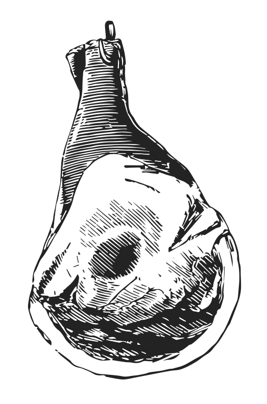
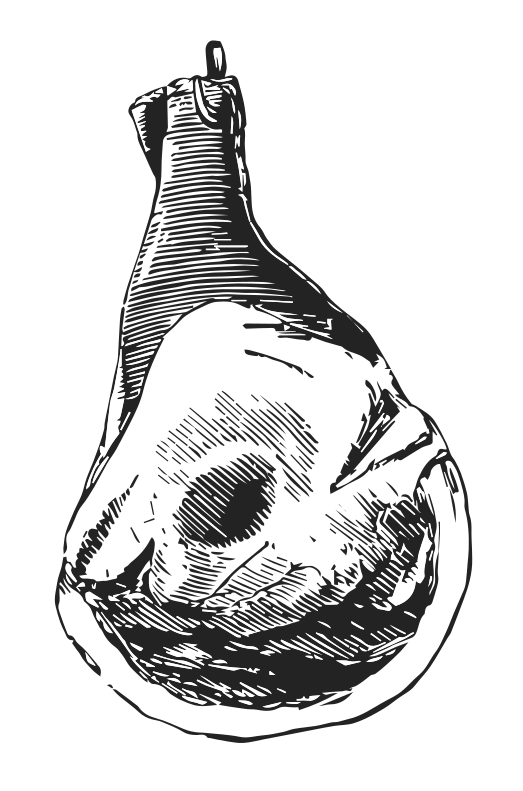

Preventing the exploitation1
For every 1 pound of fish caught, up to 5 pounds of unintended marine species are caught and discarded as "by-kill"
of animals is, for many, the primary factor in their decision to be vegan. Others believe that all sentient creatures
have a right to life and freedom.
The best way2
AG-GAG Laws criminalize whistleblowers who photo-document abuses by the animal agriculture industry.
to help animals suffering3
More than 6 million animals are killed for food every hour.
in industries that exploit
and treat them cruelly4
80% of antibiotics sold in the US are for livestock.
is to stop eating them! No animal, regardless of breeding, wants to die for someone’s dinner.5
Dead hogs are processed into feed and fed back to the hogs in our current food production industry.
The vegan lifestyle provides many scientifically proven health benefits6
Within minutes of eating dead meat bacteria toxins the body gets a burst of inflammation, stiffening or paralyzing of the arteries.
when compared to the average7
The average American consumes 209 pounds of meat per year.
western diet
.8
Most Americans consume 2x their daily protien requirements, while getting less than half of the fiber they need.
Well-planned plant-based diets are rich in protein,9
All protein is initially made by plants.
iron, calcium and other essential vitamins and minerals.10
Vitamin intake and overall nutrition go up on a plant-based diet from a meat-based diet.
A plant-based diet tends to be low in saturated fat, high in fiber and packed with antioxidants, helping mitigate some of the modern world's biggest health issues like obesity, heart disease,11
You can stop and reverse heart disease with plant-based diets.
diabetes12
One serving of processed meat per day has been found to increase your risk of developing diabetes by 51%.
and cancer.13
If you chose to eat meat, your chances of
The most effective thing you can do to lower your carbon footprint is to avoid all animal products.14
Livestock and their byproducts account for at least 32,000 million tons of carbon dioxide (CO2) per year, and 51% of all worldwide greenhouse gas emissions.
The production of meat and other animal products places a heavy burden on the environment15
Raising animals for food produces more greenhouse gases than the entire transportation sector.
- from crops and water16
Growing feed crops for livestock consumes 56% of water in the US.
required to feed the animals, to the transport and other processes involved from farm to fork.17
55% of water consumed in the US is for animal agriculture.
Meat production is a significant contributor to deforestation,18
Animal agriculture is responsible for up to 91% of Amazon destruction.
1-2 acres of rainforest is cleared every second.
habitat loss and species extinction.
19
Up to 137 plant, animal and insect species are lost every day due to rainforest destruction.
Land used20
Livestock or livestock feed occupies 1/3 of the earth’s ice-free land, covering 45% of the earth’s total land.
for animal agriculture contributes to developing world malnutrition21
We are currently growing enough food to feed 10 billion people.
by incentivising profit over the lives of people and animals in impoverished populations, resulting in starvation and human rights violations.22
82% of starving children live in countries where food is fed to animals, and the animals are eaten by western countries.
Conversely, lower quantities of crops and water are required to sustain a vegan diet, making veganism the most effective way to reduce your impact on the environment. 23
15x more protein can be grown on any given area of land with plants, rather than with cows.
24
A person who follows a vegan diet produces the equivalent of 50% less carbon dioxide, uses 1/11th oil, 1/13th water, and 1/18th land compared to a meat-lover for their food.
Plant-based living is also a more sustainable way of feeding the human family. A plant-based diet requires only one third of the land needed to support a meat and dairy diet.25
Land required to feed 1 person for 1 year:
Avoiding animal products is not just one of the simplest ways an individual can reduce the strain on food as well as other resources, it's the simplest way to take a stand against inefficient food systems26
Testing shows 88% of pork chops, 90% of ground beef, and 95% of chicken breasts sampled were contaminated with fecal bacteria.
which disproportionately affects the poorest people all over the world.27
Each day, a person who eats a vegan diet saves 1,100 gallons of water, 45 pounds of grain, 30 sq ft of forested land, 20 lbs CO2 equivalent, and one animal’s life.
The suffering caused by the dairy28
The dairy industry is the veal industry.
and egg29
The average hen is given less than an 8 ½ x 11-inch encaged area to live in her entire life.
industries is possibly less well publicized than the plight of factory farmed animals.30
Pigs in factory farms are wrapped in darkness.
31
Chickens raised for meat are called broilers, and live in a crowded shed where the ammonia from their own waste irritated and burns their eyes, throats, and skin.
32
It is common for young calves to develop acute throat irritation resulting from repeated crying for their mothers.
The production of dairy
products necessitates the death of male calves to the veal industry, while female cows are slaughtered when their milk production decreases.
In the egg industry, even ‘ethical’ or ‘free range’33
Even ‘free-range’ chickens are often kept inside massive crowded sheds without ever going outside.
eggs involve the killing of the ‘unnecessary’ male chicks.
Hens are debeaked and declawed at a young age to prevent them from harming themselves and others out of the stress they will experience in their lives.34
The cages cause bruises and abrasions, which are quickly complicated as fecal matter falls from cages above.
It’s tempting to want to believe that the meat we eat is ethical, that our ‘food animals’ have lived full, happy lives
and that they have experienced no pain or fear at the slaughterhouse. Yet the truth is that all living creatures (even those labelled ‘free range’ or ‘organic’)35
Eating organic meat will NOT help you avoid contaminants in the meat.
fear death, just as we do. No matter how they are treated when alive, they all experience the same fear when it comes to slaughter.
IT TAKES THREE WEEKS TO BUILD A HABIT.
COULD YOU CHANGE YOUR DIET?
The web was meant to be read, not squished.


 
